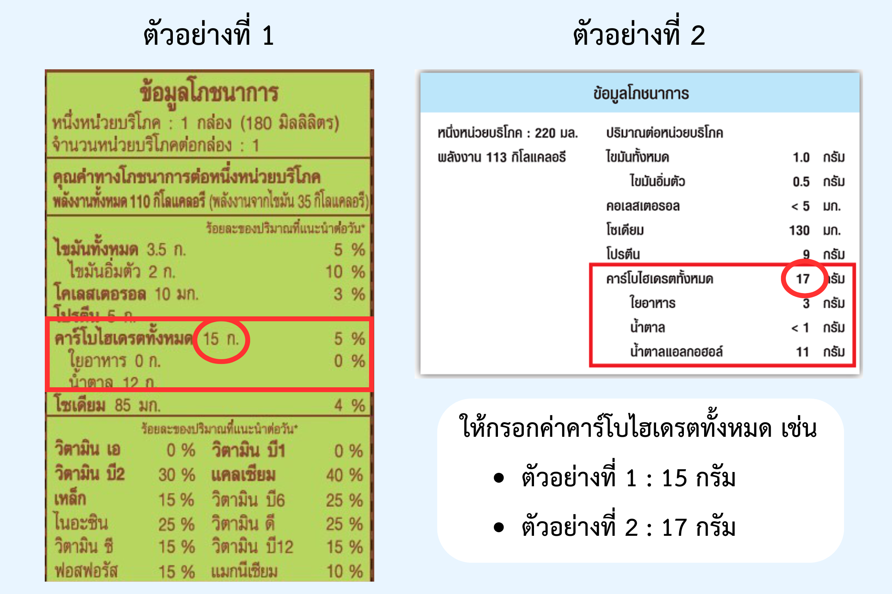

ขั้นตอนที่ 1: ข้อมูลส่วนตัว
⚠️ **สำคัญ:** ค่าเหล่านี้ต้องมาจากคำแนะนำของแพทย์
ปริมาณอินซูลินรวมต่อวัน (TDD)
?
Total Daily Dose คือปริมาณอินซูลินทั้งหมดโดยประมาณที่คุณต้องการใน 1 วัน
สัดส่วนคาร์บต่ออินซูลิน (ICR)
?
อินซูลิน 1 ยูนิต จะคุมคาร์โบไฮเดรตได้กี่กรัม (ยิ่งน้อยยิ่งไว)
ค่าความไวต่ออินซูลิน (ISF)
?
อินซูลิน 1 ยูนิต จะลดระดับน้ำตาลได้กี่ mg/dL (ยิ่งมากยิ่งไว)
ขั้นตอนที่ 2: คำนวณสำหรับมื้อนี้
3. เพิ่มรายการอาหารในมื้อนี้
สำหรับอาหารที่ไม่มีในรายการ หรืออาหารที่มีฉลากโภชนาการ

รายการอาหารที่คุณเลือก
รวมคาร์โบไฮเดรตทั้งหมด: 0 กรัม
รายละเอียดการคำนวณ
คุมอาหาร
แก้ไขน้ำตาลสูง
ปริมาณ Insulin สำหรับคุมอาหารมื้อนี้
0.0 ยูนิต
ปริมาณ Insulin สำหรับแก้ไขน้ำตาลสูง
0.0 ยูนิต
ปริมาณที่ต้องฉีด
0.0
ยูนิต
🎬 วิดีโอสอนนับคาร์โบไฮเดรต
เรียนรู้วิธีการนับคาร์โบไฮเดรต (คาร์บ) ในอาหารแต่ละประเภท เพื่อการคำนวณอินซูลินที่แม่นยำยิ่งขึ้น
ตัวอย่าง: การนับคาร์บในอาหารไทย
ℹ️ เกี่ยวกับแอปพลิเคชัน
แอปพลิเคชันนี้ถูกสร้างขึ้นโดยมีวัตถุประสงค์เพื่อเป็นเครื่องมือช่วยผู้ป่วยเบาหวานชนิดที่ 1 ในการคำนวณอินซูลินเบื้องต้น
ผู้จัดทำ
- นสภ. ระพีพัฒน์ ศุภโกศล มหาวิทยาลัยมหาสาราม
รหัสนิสิต 63010710054
- นสภ. จิรัชยา ตรีทศ มหาวิทยาลัยมหาสารคาม
รหัสนิสิต 63010710015
แหล่งข้อมูลอ้างอิง